Apresentação
Número atual
Número atual
Chamadas
Comitê Editorial
Regras editoriais
História e estatísticas
Apresentações
Contato
Español
RELEG: Revista Latinoamericana de Estudantes de Geografia
História e estatísticas
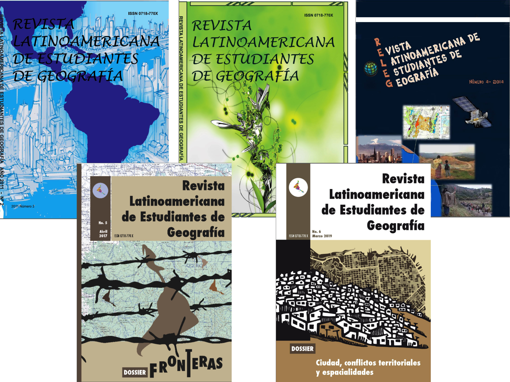
No. 1, 2009
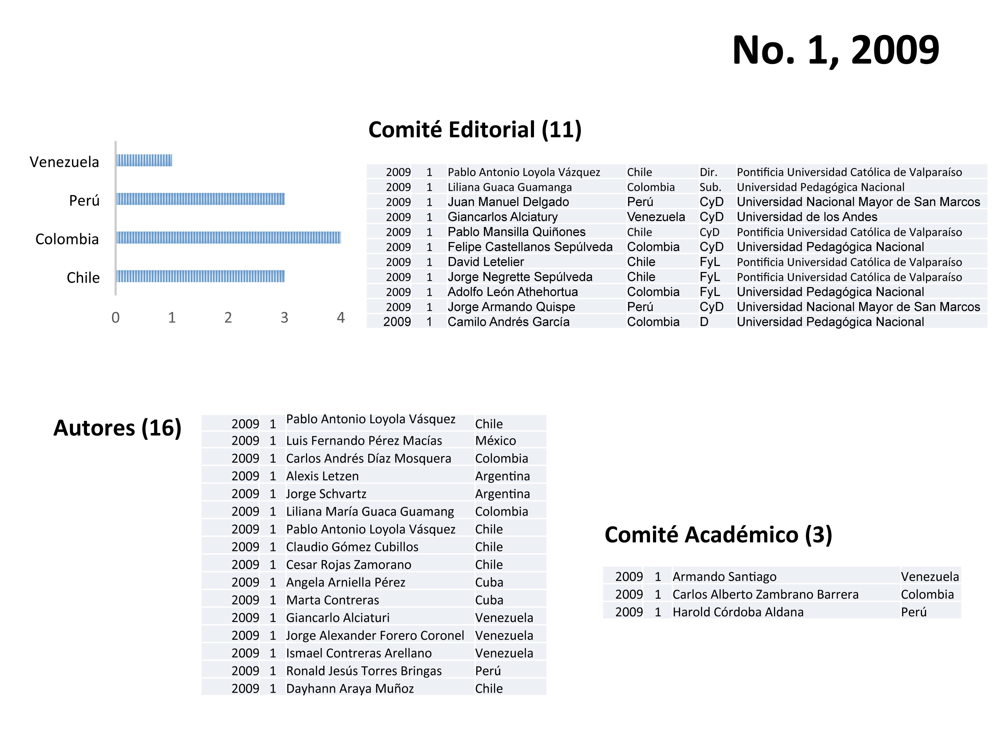
No. 2, 2011
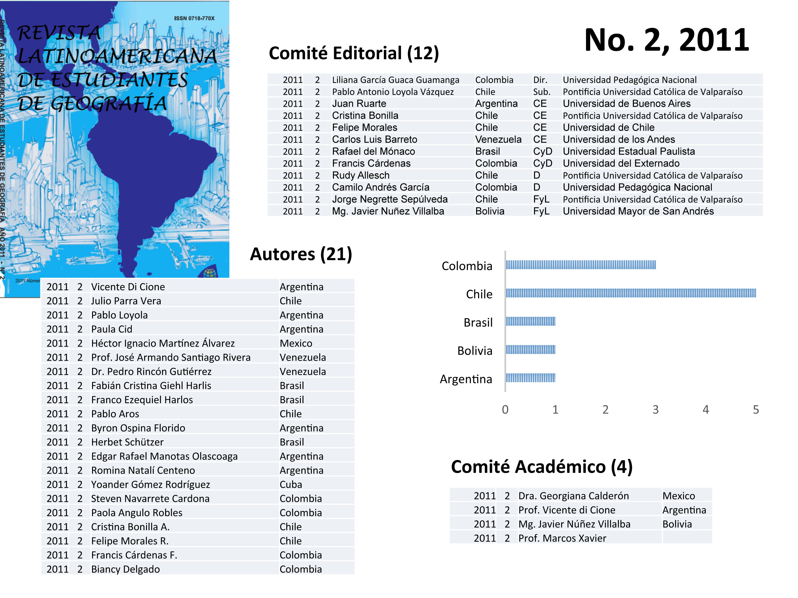
No. 3, 2012
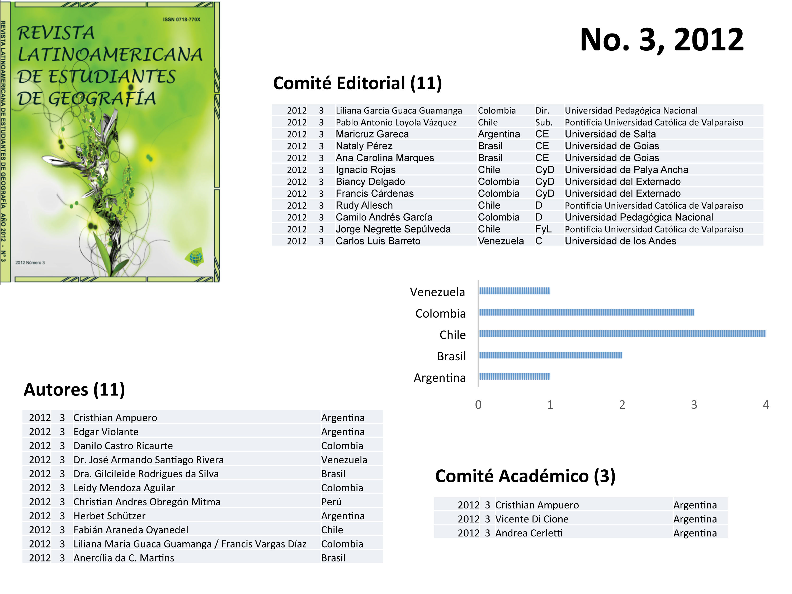
No. 4, 2014
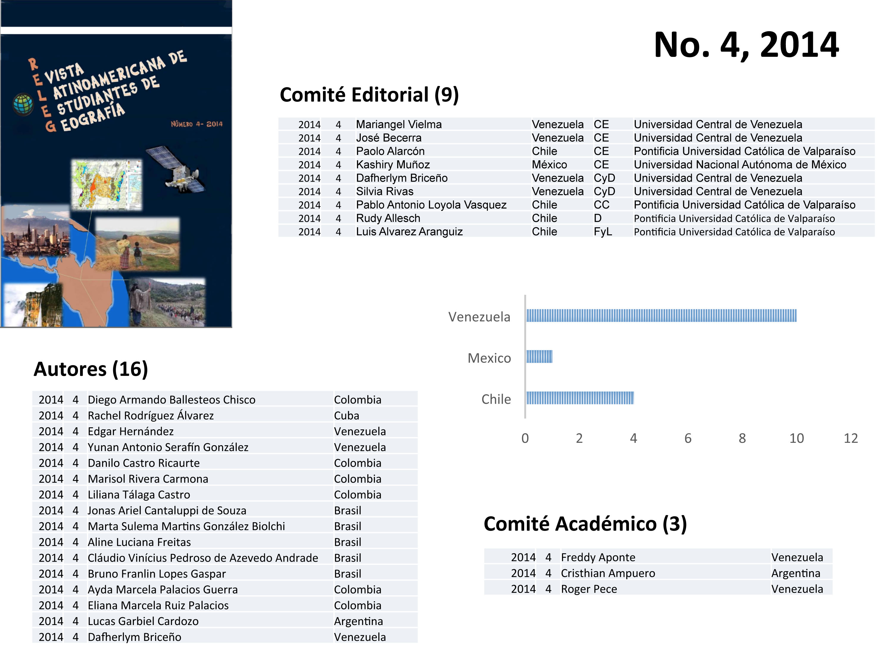
No. 5, 2017
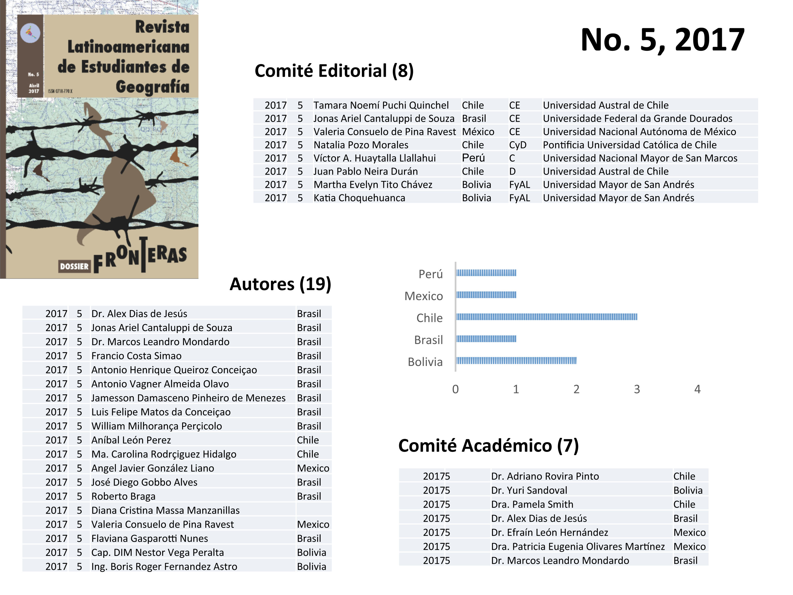
No. 6, 2019
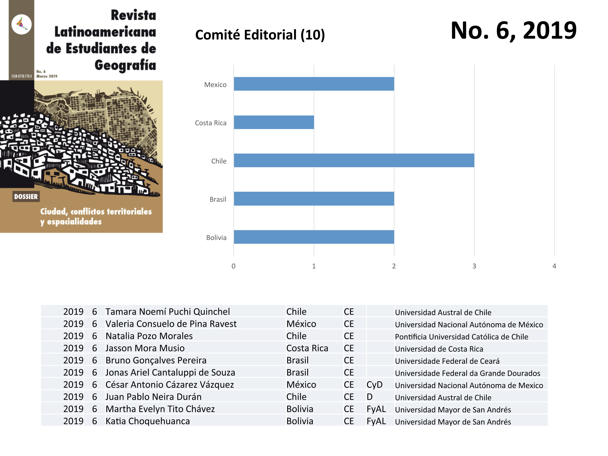
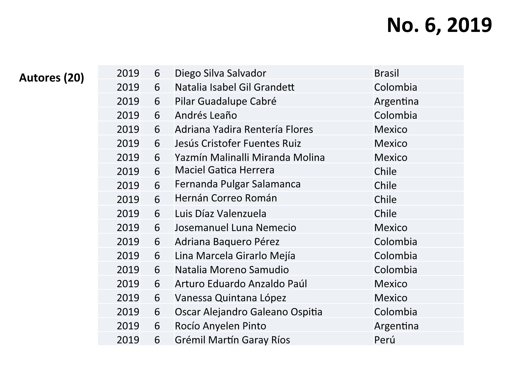
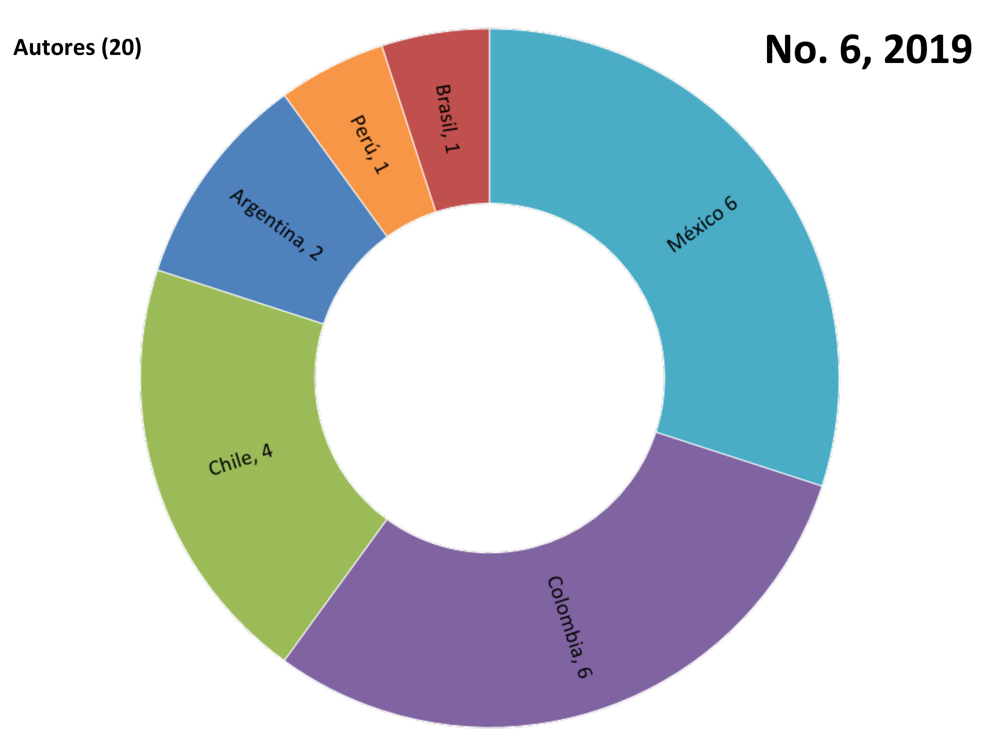
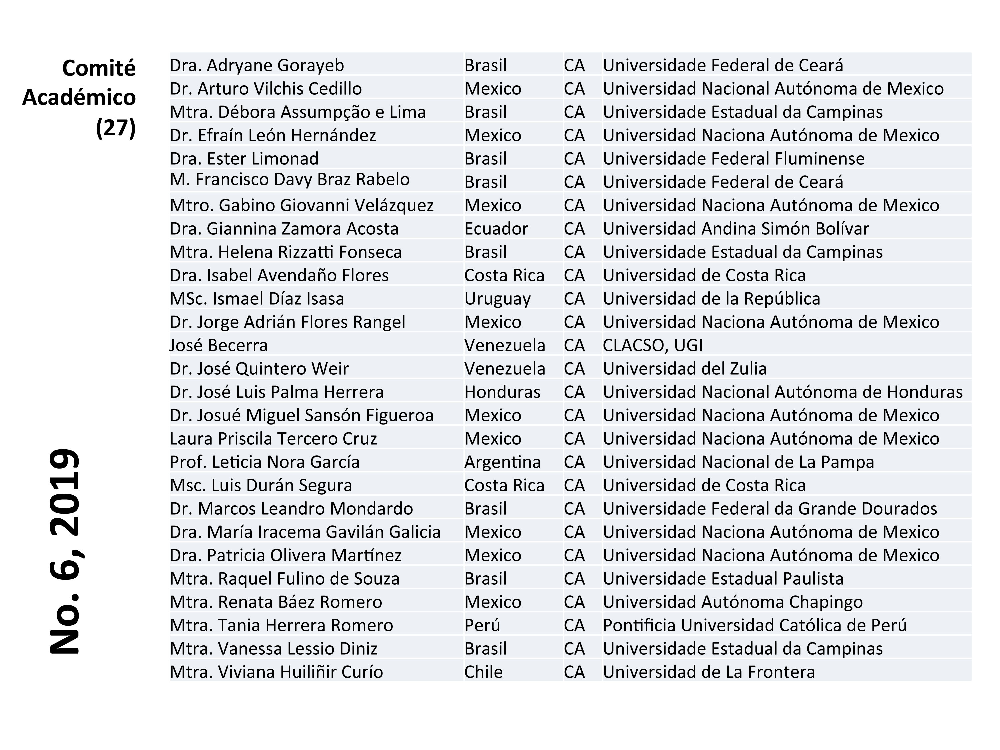
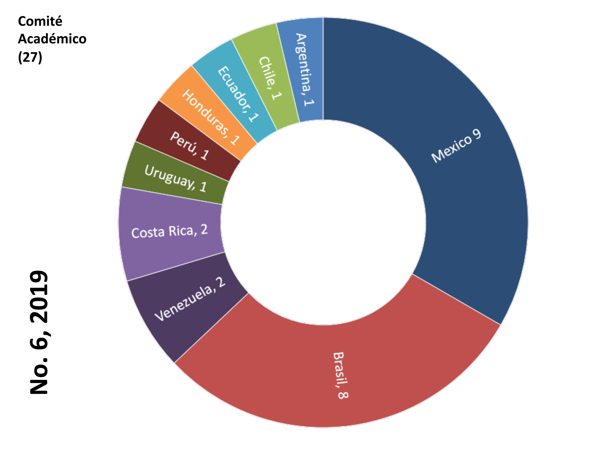
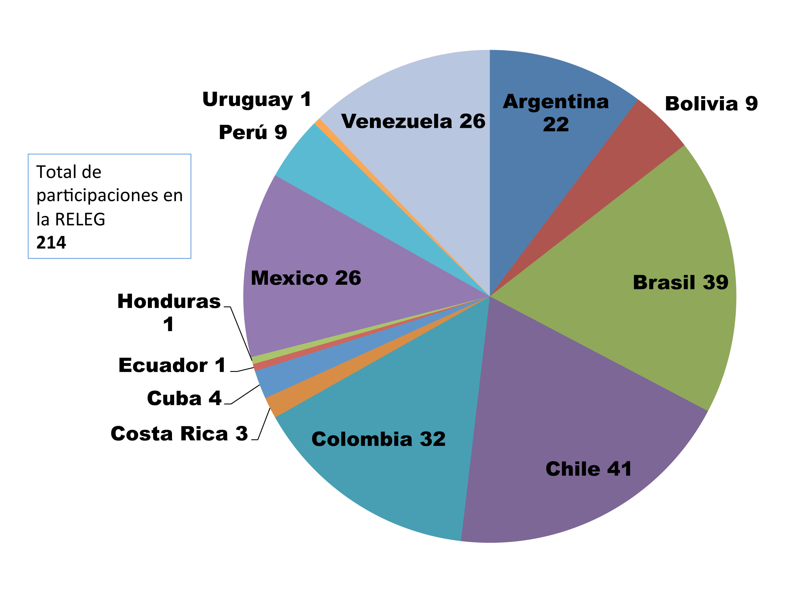